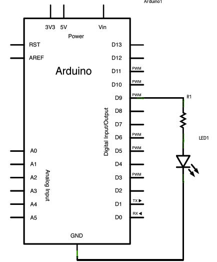

Learning Examples | Foundations | Hacking | Links
Examples > Communication
Dimmer
This example shows how to send data from a personal computer to an Arduino board to control the brightness of an LED. The data is sent in individual bytes, each of which ranges in value from 0 to 255. Arduino reads these bytes and uses them to set the brightness of the LED.
You can send bytes to the Arduino from any software that can access the computer serial port. Examples for Processing and Max/MSP version 5 are shown below.
Hardware Required
- Arduino Board
- LED
- 220 ohm resistor
Software Required
Circuit
An LED connected to pin 9. Use an appropriate resistor as needed. For most common LEDs, you can usually do without the resistor, as the current output of the digital I/O pins is limited.
click the image to enlarge
image developed using Fritzing. For more circuit examples, see the Fritzing project page
Schematic
click the image to enlarge
%
Code
/*
Dimmer
Demonstrates the sending data from the computer to the Arduino board,
in this case to control the brightness of an LED. The data is sent
in individual bytes, each of which ranges from 0 to 255. Arduino
reads these bytes and uses them to set the brightness of the LED.
The circuit:
LED attached from digital pin 9 to ground.
Serial connection to Processing, Max/MSP, or another serial application
created 2006
by David A. Mellis
modified 30 Aug 2011
by Tom Igoe and Scott Fitzgerald
This example code is in the public domain.
http://arduino.cc/en/Tutorial/Dimmer
*/
const int ledPin = 9; // the pin that the LED is attached to
void setup()
{
// initialize the serial communication:
Serial.begin(9600);
// initialize the ledPin as an output:
pinMode(ledPin, OUTPUT);
}
void loop() {
byte brightness;
// check if data has been sent from the computer:
if (Serial.available()) {
// read the most recent byte (which will be from 0 to 255):
brightness = Serial.read();
// set the brightness of the LED:
analogWrite(ledPin, brightness);
}
}
/* Processing code for this example
// Dimmer - sends bytes over a serial port
// by David A. Mellis
//This example code is in the public domain.
import processing.serial.*;
Serial port;
void setup() {
size(256, 150);
println("Available serial ports:");
println(Serial.list());
// Uses the first port in this list (number 0). Change this to
// select the port corresponding to your Arduino board. The last
// parameter (e.g. 9600) is the speed of the communication. It
// has to correspond to the value passed to Serial.begin() in your
// Arduino sketch.
port = new Serial(this, Serial.list()[0], 9600);
// If you know the name of the port used by the Arduino board, you
// can specify it directly like this.
//port = new Serial(this, "COM1", 9600);
}
void draw() {
// draw a gradient from black to white
for (int i = 0; i < 256; i++) {
stroke(i);
line(i, 0, i, 150);
}
// write the current X-position of the mouse to the serial port as
// a single byte
port.write(mouseX);
}
*/
/* Max/MSP v5 patch for this example
----------begin_max5_patcher----------
1008.3ocuXszaiaCD9r8uhA5rqAeHIa0aAMaAVf1S6hdoYQAsDiL6JQZHQ2M
YWr+2KeX4vjnjXKKkKhhiGQ9MeyCNz+X9rnMp63sQvuB+MLa1OlOalSjUvrC
ymEUytKuh05TKJWUWyk5nE9eSyuS6jesvHu4F4MxOuUzB6X57sPKWVzBLXiP
xZtGj6q2vafaaT0.BzJfjj.p8ZPukazsQvpfcpFs8mXR3plh8BoBxURIOWyK
rxspZ0YI.eTCEh5Vqp+wGtFXZMKe6CZc3yWZwTdCmYW.BBkdiby8v0r+ST.W
sD9SdUkn8FYspPbqvnBNFtZWiUyLmleJWo0vuKzeuj2vpJLaWA7YiE7wREui
FpDFDp1KcbAFcP5sJoVxp4NB5Jq40ougIDxJt1wo3GDZHiNocKhiIExx+owv
AdOEAksDs.RRrOoww1Arc.9RvN2J9tamwjkcqknvAE0l+8WnjHqreNet8whK
z6mukIK4d+Xknv3jstvJs8EirMMhxsZIusET25jXbX8xczIl5xPVxhPcTGFu
xNDu9rXtUCg37g9Q8Yc+EuofIYmg8QdkPCrOnXsaHwYs3rWx9PGsO+pqueG2
uNQBqWFh1X7qQG+3.VHcHrfO1nyR2TlqpTM9MDsLKNCQVz6KO.+Sfc5j1Ykj
jzkn2jwNDRP7LVb3d9LtoWBAOnvB92Le6yRmZ4UF7YpQhiFi7A5Ka8zXhKdA
4r9TRGG7V4COiSbAJKdXrWNhhF0hNUh7uBa4Mba0l7JUK+omjDMwkSn95Izr
TOwkdp7W.oPRmNRQsiKeu4j3CkfVgt.NYPEYqMGvvJ48vIlPiyzrIuZskWIS
xGJPcmPiWOfLodybH3wjPbMYwlbFIMNHPHFOtLBNaLSa9sGk1TxMzCX5KTa6
WIH2ocxSdngM0QPqFRxyPHFsprrhGc9Gy9xoBjz0NWdR2yW9DUa2F85jG2v9
FgTO4Q8qiC7fzzQNpmNpsY3BrYPVJBMJQ1uVmoItRhw9NrVGO3NMNzYZ+zS7
3WTvTOnUydG5kHMKLqAOjTe7fN2bGSxOZDkMrBrGQ9J1gONBEy0k4gVo8qHc
cxmfxVihWz6a3yqY9NazzUYkua9UnynadOtogW.JfsVGRVNEbWF8I+eHtcwJ
+wLXqZeSdWLo+FQF6731Tva0BISKTx.cLwmgJsUTTvkg1YsnXmxDge.CDR7x
D6YmX6fMznaF7kdczmJXwm.XSOOrdoHhNA7GMiZYLZZR.+4lconMaJP6JOZ8
ftCs1YWHZI3o.sIXezX5ihMSuXzZtk3ai1mXRSczoCS32hAydeyXNEu5SHyS
xqZqbd3ZLdera1iPqYxOm++v7SUSz
-----------end_max5_patcher-----------
*/
Processing Code
The Processing sketch in the code sample above will send bytes out the serial port to the Arduino to dim the LED.
Max code
The Max/MSP patch in the code sample above looks like the image below. Copy it and paste it into a new patch window.
See Also:
{kind=link}
{kind=link}
{kind=link}